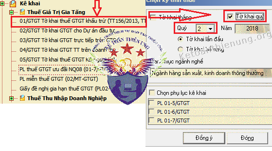
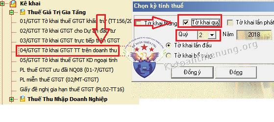
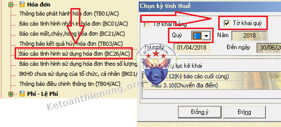

Hàng quý phải nộp những gì cho cơ quan thuế? Các loại Tờ khai và Báo cáo phải nộp theo quý cho cơ quan thuế là gì? Thời hạn nộp các loại báo cáo thuế hàng quý như nào? Kế toán Diệu Tâm sẽ giải đáp các vướng mắc đó của các bạn.
I. Tờ khai thuế GTGT phải nộp theo quý:
Theo khoản 2 điều 11 Thông tư 156/2013/TT-BTC được sửa đổi bởi Thông tư 151/2014/TT-BTC, Thông tư 119/2014/TT-BTC và Thông tư 26/2015/TT-BTC (Có hiệu lực từ ngày 01/01/2015).
Chi tiết về việc xác định DN kê khai thuế GTGT theo Qúy hay theo Tháng các bạn xem tại đây nhé:
Cách xác định kê khai thuế GTGT theo quý

1. Hồ sơ khai thuế GTGT quý áp dụng phương pháp khấu trừ thuế:
- Tờ khai thuế giá trị gia tăng theo mẫu số 01/GTGT ban hành kèm theo Thông tư Thông tư 26/2015/TT-BTC
|
Trường hợp người nộp thuế có hoạt động kinh doanh xây dựng, lắp đặt, bán hàng vãng lai, chuyển nhượng bất động sản ngoại tỉnh hoặc có cơ sở sản xuất trực thuộc tại địa phương khác nơi đóng trụ sở chính thì người nộp thuế nộp cùng Tờ khai thuế GTGT tài liệu sau: - Bảng tổng hợp số thuế GTGT đã nộp của doanh thu kinh doanh xây dựng, lắp đặt, bán hàng vãng lai, chuyển nhượng bất động sản ngoại tỉnh (nếu có) theo mẫu số 01-5/GTGT. - Bảng phân bổ thuế GTGT cho địa phương nơi đóng trụ sở chính và cho các địa phương nơi có cơ sở sản xuất trực thuộc không thực hiện hạch toán kế toán (nếu có) theo mẫu số 01-6/GTGT. - Bảng phân bổ số thuế GTGT phải nộp cho các địa phương nơi có công trình xây dựng, lắp đặt liên tỉnh (nếu có) theo mẫu số 01-7/GTGT |
Hồ sơ khai thuế GTGT của dự án đầu tư bao gồm:
- Tờ khai thuế GTGT dành cho dự án đầu tư theo mẫu số 02/GTGT ban hành kèm theo Thông tư 156/2013/TT-BTC;
- Bảng kê hóa đơn, chứng từ hàng hóa dịch vụ mua vào theo mẫu số 01-2/GTGT ban hành kèm theo Thông tư 156/2013/TT-BTC.
| Trường hợp người nộp thuế có dự án đầu tư và phải thực hiện bù trừ số thuế GTGT của hàng hóa, dịch vụ mua vào sử dụng cho dự án đầu tư với thuế GTGT của hoạt động sản xuất kinh doanh đang thực hiện thì việc kê khai thuế GTGT của dự án đầu tư theo tháng hay quý được thực hiện cùng với việc kê khai thuế GTGT của trụ sở chính. |
2. Hồ sơ khai thuế GTGT theo quý tính theo phương pháp trực tiếp trên GTGT:
- Tờ khai thuế giá trị gia tăng theo mẫu số 03/GTGT ban hành theo Thông tư 156/2013/TT-BTC.
3. Hồ sơ khai thuế GTGT theo quý tính theo phương pháp trực tiếp trên doanh thu:
- Tờ khai thuế GTGT mẫu số 04/GTGT ban hành kèm theo Thông tư số 156/2013/TT-BTC.

Chi tiết về việc kê khai thuế GTGT các bạn xem tại đây nhé:
Hướng dẫn cách kê khai thuế Giá trị gia tăng
II. Tờ khai thuế TNCN phải nộp theo quý:
Theo điều 16 Thông tư 156/2013/TT-BTC được sửa đổi bởi Thông tư 92/2015/TT-BTC
Hồ sơ khai thuế TNCN theo quý:
- Tổ chức, cá nhân trả thu nhập khấu trừ thuế đối với thu nhập từ tiền lương, tiền công khai thuế theo Tờ khai mẫu số 05/KK-TNCN ban hành kèm theo Thông tư số 92/2015/TT-BTC.
|
- Tổ chức, cá nhân trả thu nhập khấu trừ thuế đối với thu nhập từ đầu tư vốn, từ chuyển nhượng chứng khoán, từ bản quyền, từ nhượng quyền thương mại, từ trúng thưởng của cá nhân cư trú và cá nhân không cư trú; từ kinh doanh của cá nhân không cư trú; Tổ chức, cá nhân nhận chuyển nhượng vốn của cá nhân không cư trú khai thuế theo Tờ khai mẫu số 06/TNCN ban hành kèm theo Thông tư số 92/2015/TT-BTC. - Công ty xổ số kiến thiết, doanh nghiệp bảo hiểm, doanh nghiệp bán hàng đa cấp khấu trừ thuế đối với tiền hoa hồng từ làm đại lý xổ số, đại lý bảo hiểm, bán hàng đa cấp của cá nhân khai thuế theo Tờ khai mẫu số 01/XSBHĐC ban hành kèm theo Thông tư số 92/2015/TT-BTC. Đối với tờ khai kỳ tháng/kỳ quý cuối cùng trong năm, phải kèm theo Phụ lục theo mẫu số 01-1/BK-XSBHĐC ban hành kèm theo Thông tư số 92/2015/TT-BTC (không phân biệt có phát sinh khấu trừ thuế hay không phát sinh khấu trừ thuế) |
Chi tiết về việc xác định DN kê khai thuế TNCN theo Qúy hay theo Tháng, cách kê khai các bạn xem tại đây nhé:
Hướng dẫn kê khai thuế thu nhập cá nhân
Chú ý:
- Nếu DN bạn có sử dụng Chứng từ khấu trừ thuế TNCN thì hàng quý phải làm báo cáo sử dụng chứng từ khấu trừ thuế TNCN nhé. Chi tiết về quy định, cách lập Báo cáo ..
Các bạn xem tại đây nhé: Quy định về chứng từ khấu trừ thuế TNCN
------------------------------------------------------------------------------------------------------------
3. Tính tiền thuế TNDN tạm nộp quý:
Theo Điều 17 Thông tư 151/2014/TT-BTC quy định việc Tạm nộp tiền thuế TNDN như sau:
Hàng quý: Căn cứ kết quả sản xuất, kinh doanh, người nộp thuế thực hiện tạm nộp số thuế thu nhập doanh nghiệp của quý chậm nhất vào ngày thứ 30 của quý tiếp theo quý phát sinh nghĩa vụ thuế; doanh nghiệp không phải nộp tờ khai thuế TNDN tạm tính hàng quý.
Như vậy: Hàng quý DN không phải nộp Tờ khai thuế TNDN tạm tính nữa -> Mà sẽ tự tính để tạm nộp số tiền thuế TNDN.
Nhưng chú ý: Nếu số tạm nộp trong năm mà thấp hơn số thuế TNDN phải nộp theo Quyết toán từ 20% trở lên thì sẽ bị phạt chậm nộp tiền thuế đó nhé
Chi tiết các bạn xem tại đây: Cách tính thuế TNDN tạm tính quý
4. Nộp báo cáo tình hình sử dụng hóa đơn theo Qúy:
Theo Công văn 2010/TCT-TVQT của Tổng cục thuế hướng dẫn điều 27 Thông tư 39/2014/TT-BTC quy định: 
Hàng quý, tổ chức, hộ, cá nhân bán hàng hóa, dịch vụ (trừ đối lượng được cơ quan thuế cấp hóa đơn) có trách nhiệm nộp Báo cáo tình hình sử dụng hóa đơn cho cơ quan thuế quản lý trực tiếp, kể cả trong kỳ không sử dụng hóa đơn.
Chi tiết các bạn xem thêm:
Cách lập báo cáo tình hình sử dụng hóa đơn quý
|
- Riêng doanh nghiệp mới thành lập, doanh nghiệp sử dụng hóa đơn tự in, đặt in có hành vi vi phạm không được sử dụng hóa đơn tự in, đặt in, doanh nghiệp thuộc loại rủi ro cao về thuế thuộc diện mua hóa đơn của cơ quan thuế theo hướng dẫn tại Điều 11 Thông tư số 39/2014/TT-BTC thực hiện nộp Báo cáo tình hình sử dụng hóa đơn theo tháng. Trường hợp doanh nghiệp nộp báo cáo tình hình sử dụng hóa đơn theo tháng thì doanh nghiệp không phải nộp báo cáo tình hình sử dụng hóa đơn theo quý. Trường hợp tổ chức kinh doanh, doanh nghiệp trong một kỳ báo cáo có hai loại hóa đơn (hóa đơn do tổ chức kinh doanh, doanh nghiệp tự in, đặt in và hóa đơn mua của cơ quan thuế) thì thực hiện báo cáo tình hình sử dụng hóa đơn trong cùng một báo cáo. Hóa đơn thu cước dịch vụ viễn thông, hóa đơn tiền điện, hóa đơn tiền nước, hóa đơn thu phí dịch vụ của các ngân hàng, vé vận tải hành khách của các đơn vị vận tải, các loại tem, vé, thẻ và một số trường hợp khác theo hướng dẫn của Bộ Tài chính không phải báo cáo đến từng số hóa đơn mà báo cáo theo số lượng (tổng số) hóa đơn theo mẫu 3.9 Phụ lục 3 ban hành kèm theo Thông tư số 39/2014/TT-BTC; trong đó không phải điền dữ liệu vào các cột chi tiết từ số đến số, chỉ điền dữ liệu vào các cột số lượng hóa đơn. |
5. Thời hạn nộp các báo cáo thuế hàng quý
- Chậm nhất là ngày thứ 30 (ba mươi) của quý tiếp theo quý phát sinh nghĩa vụ thuế.
VD: Các bạn nộp Tờ khai thuế GTGT quý 2/2018 thì hạn chậm nhất là ngày 30/10/2018.
- Chú ý: Hạn nộp Tờ khai cũng là hạn nộp Tiền thuế (nếu có nhé)
Chú ý: Vì hiện tại tất cả các DN đều có thể nộp Các Tờ khai, báo cáo trên qua mạng (Tức là có nộp bất cứ lúc nào) nên các bạn phải đúng thời hạn trên nhé.
Xem thêm: Lịch nộp các loại báo cáo thuế quý năm
-----------------------------------------------------------------------------------------------
Kế toán Diệu Tâm Chúc các bạn làm tốt công việc kế toán!